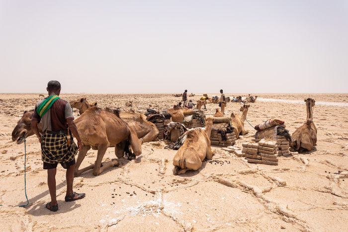
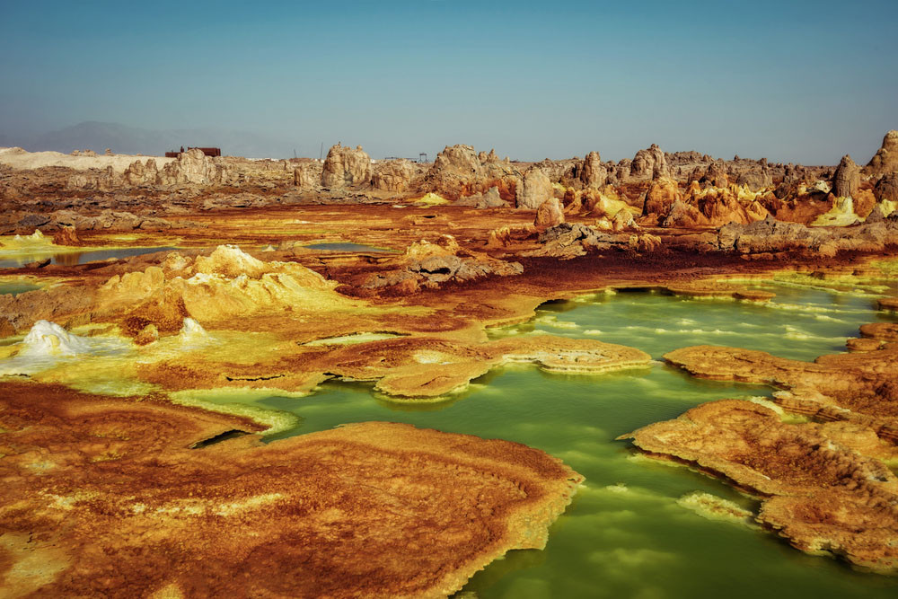

Le désert du Danakil compte parmi les lieux les plus hostiles de la planète. Certaines
parties de
cette vaste dépression descendent à une centaine de mètres sous le niveau de la mer, les
précipitations annuelles y sont quasi-inexistantes, les températures peuvent monter jusqu’à
50°C.

Les paysages du Danakil ressemblent à ceux d’une autre planète. Fortement marquée
par l’activité volcanique, cette zone présente des formations géologiques étonnantes et
des couleurs irréelles. Les plus téméraires apprécieront de voir les coulées de lave
du volcan Erta Alé, toujours en activité, tandis que les autres pourront s’émerveiller
devant le lac acide du Dallol ou encore visiter un des nombreux lacs salés de la région et en
apprendre davantage sur les traditions des Afars.

Le site est centré sur le bloc Danakil et la dépression de Dancalie qui fait partie de
la dépression de l'Afar. Ses précipitations annuelles sont de l'ordre de 100 à 200
millimètres. Les températures les plus élevées se rencontrent en Dancalie dont le point le plus
bas est situé à une centaine de mètres sous le niveau de la mer. Malgré l'aridité de la
région et la présence de gisements de sel, principale ressource exploitée de la région,
de nombreux animaux, essentiellement herbivores tels le zèbre de Grévy, la gazelle de
Soemmering ou encore 'âne sauvage d'Afrique, y vivent.